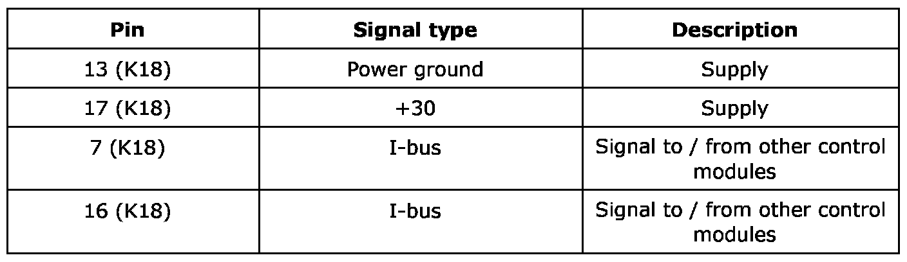
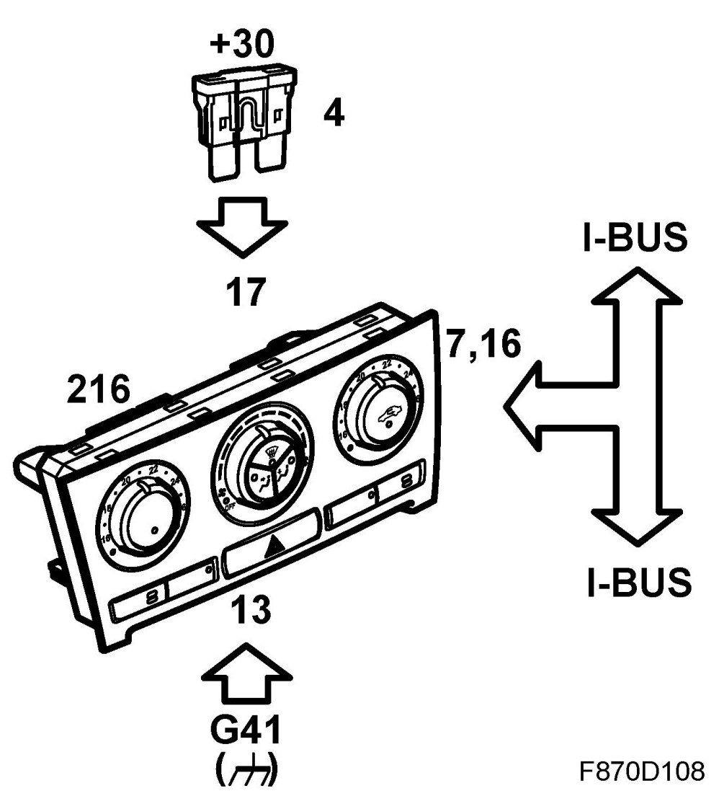
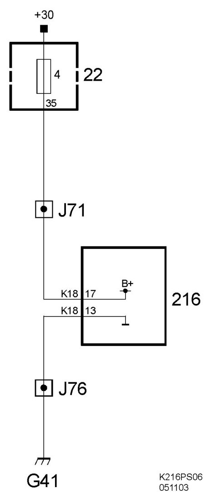

Control Assembly: Description and Operation
Automatic Climate Control (216)
Location
Automatic Climate Control (216)
Main task
The control module ensures that the cabin climate always corresponds to the desired user settings.
Type
Contains a microprocessor, see ACC, general description. Programmable with SPS (Service Program System).


